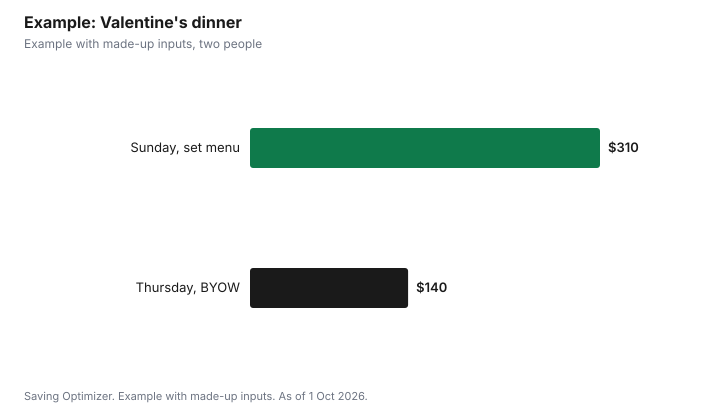

Events · Canada
Valentine's Day 2027 on a Budget in Canada: Dinner, Gifts and the Super Bowl Clash
Valentine's Day 2027 is Sunday 14 February, the same day as Super Bowl LXI, so start by choosing which day you will actually celebrate. Moving dinner to Saturday the 13th, a weeknight before, or the week after is often the single biggest saving, because restaurants and florists price for the day itself. Then pick one main experience, dinner out, dinner in or an outing, and keep gifts small and personal. In Ontario, restaurants with a bring-your-own-wine endorsement let you bring a sealed bottle of commercially made wine, which can cut the drinks bill.
Key takeaways
- 14 February 2027 is a Sunday and also Super Bowl LXI day.
- Celebrating on a different day avoids set-day menus and peak flower prices.
- Choose one main experience and budget the rest around it.
- Ontario BYOW restaurants accept sealed, commercially made wine; they set the corkage.
- Free museum nights and cheap movie nights work as date add-ons.
- Example with made-up inputs: a $310 Sunday plan becomes $140 on Thursday.
The date and the clash
SoFi Stadium lists Super Bowl LXI for Sunday 14 February 2027. For couples where one person wants the game, that settles it: celebrate Valentine's Day on Saturday, or plan a game-day dinner at home and save the date for another night. Restaurants may be busy with both crowds that weekend, and some will offer set menus on Valentine's Day itself. Book early if you want the actual day, or skip the rush entirely.
| Day | Pros | Cons |
|---|---|---|
| Sunday 14 February | The actual day | Super Bowl clash; set menus; busiest night |
| Saturday 13 February | Weekend, no game | Still busy; book early |
| A weeknight before | Regular menus, easy bookings | Work the next day |
| The week after | Regular prices; discounted chocolate and flowers | Feels less special to some |
Dinner out or in
Many restaurants switch to a prix fixe menu for Valentine's Day. That can be good value if you would order three courses anyway, but it removes the cheaper choices. On any other night, you can order what you want and share a dessert. Ask about the drinks bill, which is often a large part of the total.
In Ontario, the Alcohol and Gaming Commission says a bring-your-own-wine endorsement lets patrons bring sealed, unopened containers of commercially made wine to a restaurant to drink. Commercially made excludes wine made at a ferment-on-premise facility or a wine pub, fortified wine and homemade wine. The endorsement is free for the restaurant, but the restaurant sets its own corkage fee, so ask before you go. If drinking, keep in mind Canada's Guidance on Alcohol and Health counts a standard drink as 142 ml of 12% wine and says more than two drinks per occasion increases risk.
| Option | Main costs | How to save |
|---|---|---|
| Restaurant on the day | Set menu, drinks, tax, tip | Book early; share starters |
| Restaurant another night | Regular menu, drinks, tax, tip | Pick a BYOW restaurant in Ontario |
| Cook at home | Groceries, maybe wine | Cook one special dish; buy dessert |
| Takeout and a film | Takeout, streaming | Order directly from the restaurant |
Flowers, chocolate and gifts
Cut flowers and chocolate are priced for the day. A potted plant lasts longer, and chocolate is often discounted right after the holiday. If you celebrate the week after, you can buy both for less. For gifts, a small personal item, a handwritten note or an experience you will do together tends to matter more than price. Set a cap with your partner ahead of time so neither of you overspends to match the other.
Cheap or free outings
Several Toronto institutions offer free evenings that make easy dates any month. The Art Gallery of Ontario has free general admission on the first Wednesday night of each month from 6 to 9 pm; book online, with tickets released at 10 am on the Monday before and a maximum of two per booking. The AGO also gives Ontarians under 25 free admission. The Royal Ontario Museum runs Third Tuesday Nights Free with advance tickets required and special exhibitions excluded. Cineplex offers discounted Tuesdays, and Scene+ members get an extra discount on Tuesday tickets. Check your own city's museums and library for similar offers.
| Outing | Offer | Catch |
|---|---|---|
| Art Gallery of Ontario | Free first Wednesday night, 6 to 9 pm | Book online; released 10 am Monday before; max 2 tickets |
| Art Gallery of Ontario | Free admission for Ontarians under 25 | Age limit |
| Royal Ontario Museum | Third Tuesday Nights Free | Advance tickets; special exhibitions excluded |
| Cineplex | Discounted Tuesdays; extra off for Scene+ members | Restrictions may apply |
Example with made-up inputs: Sunday or Thursday
These numbers are an example with made-up inputs. A couple prices Valentine's Sunday at a restaurant: a $180 set menu for two with tax and tip, $70 for a bottle of wine on the list, and $60 for roses, $310 in total. Instead, they go out on the Thursday before to an Ontario BYOW restaurant, order from the regular menu for $105 with tax and tip, bring a $20 bottle and pay a $15 corkage fee, and skip flowers on the day. Total: $140, a saving of $170. If one of them wants the Super Bowl, Sunday becomes a game night at home.
| Line | Sunday, set menu | Thursday, BYOW |
|---|---|---|
| Dinner with tax and tip | $180 | $105 |
| Wine | $70 on the list | $20 bottle + $15 corkage |
| Flowers | $60 roses | $0 on the day |
| Total | $310 | $140 |

The saving comes mostly from the day, not from doing less: the Thursday dinner is still a restaurant meal with wine. If the couple wanted the actual date, a home-cooked dinner with the same $20 bottle and a dessert from a bakery would land in the same range.
Steps
- Decide whether you celebrate on Sunday 14 February 2027 or another day.
- Agree on a gift cap and one main experience.
- If dining out, compare the set menu with a regular night, and look for BYOW in Ontario.
- Book early for the weekend, or choose a quieter weeknight.
- Add a free museum night or a Tuesday film if you want more.
- Buy chocolate and flowers after the day if timing allows.
For the game itself, see a Super Bowl party budget. For more ideas, see date night ideas on a budget.
Sources
- SoFi Stadium, Super Bowl LXI, sofistadium.com, as of 1 Oct 2026. Sunday 14 February 2027.
- Alcohol and Gaming Commission of Ontario, Apply for a bring-your-own-wine endorsement, agco.ca, as of 1 Oct 2026.
- Canadian Centre on Substance Use and Addiction, Canada's Guidance on Alcohol and Health, ccsa.ca, as of 1 Oct 2026. Standard drink and risk levels.
- Art Gallery of Ontario, First Wednesday Night Free and Visit for free, ago.ca, as of 1 Oct 2026.
- Royal Ontario Museum, Third Tuesday Nights Free, rom.on.ca, as of 1 Oct 2026.
- Cineplex, Scene+ at Cineplex, cineplex.com, as of 1 Oct 2026. Tuesday offer for Scene+ members.
- Restaurant, wine and flower amounts in the example are an example with made-up inputs.
Frequently asked questions
What day is Valentine's Day 2027?
Sunday 14 February 2027. It is also the day of Super Bowl LXI, according to SoFi Stadium.
How can I save on Valentine's dinner?
Celebrate on another night to avoid set menus, share starters or desserts, and in Ontario consider a bring-your-own-wine restaurant. Cooking one special dish at home is cheapest.
Can I bring my own wine to a restaurant in Ontario?
Yes, if the restaurant has an AGCO bring-your-own-wine endorsement. The wine must be sealed, unopened and commercially made, and the restaurant sets its corkage fee.
Are flowers cheaper after Valentine's Day?
Cut flowers and chocolate are priced for the day, so buying after it or choosing a potted plant usually costs less.
What are free date ideas in Toronto?
The AGO's free first Wednesday night from 6 to 9 pm and the ROM's Third Tuesday Nights Free both need advance tickets. Cineplex Tuesdays are a cheap add-on.
What if my partner wants to watch the Super Bowl?
Celebrate on Saturday 13 February or another night, and make Sunday a game night at home.
Researched and drafted with AI assistance and fact-checked against official Canadian sources. How we create content.
Disclosure: Saving Optimizer may earn a commission if a partner link is added later, such as a restaurant or gift offer type. No partnership is claimed on this page. Education only.